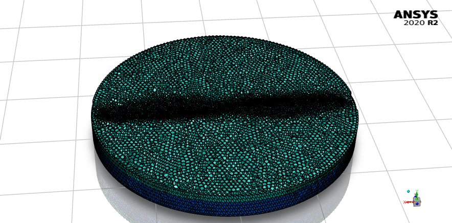

Learnings
Through this project, I gained valuable technical skills including proficiency in CFD simulation using ANSYS FLUENT, understanding turbulence models like Transition-SST, and performing FFT analysis for vibration studies using MATLAB. Additionally, I honed my project management, problem-solving, and critical thinking abilities by tackling complex challenges, optimizing models, and utilizing remote servers and HPC for simulation work. Enhanced collaborative and communication skills were developed, since covid lockdown forced to incorporate remote workflow.
Project Gallery
